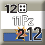

Mando, suministro y objetivos
En la lección 2 viste que todo se hace formación a formación y que el SNAFU decide cómo de bien funciona cada una. Aquí verás de qué depende. En el BCS nada se mueve suelto: cada unidad pertenece a una formación, depende de su HQ y vive de la ruta que lo une con los trenes y con la retaguardia. Cortar esos hilos hace más daño que muchos ataques.
La pieza que se activa
Una formación es un mando con su HQ, sus trenes de combate y sus unidades: una división en un juego, una brigada o un Kampfgruppe en otro. El turno gira alrededor de ellas, una cada vez, alternando bandos. 1.3
Lo que comparten
Todas las unidades de la formación usan lo mismo:
Propias e independientes
Las unidades propias (Intrinsic) llevan impresa su formación a la derecha del símbolo y nunca cambian de mando. Las independientes y los puntos de artillería se asignan en la fase de asignación y, mientras tanto, son una parte más de su formación. 1.3b · 2.3
La mancha Blob
El área de la formación: la forma suave que dibujan sus unidades más exteriores (sin contar trenes, unidades fuera de mando ni refuerzos). Si una unidad activa de otra formación amiga se mete dentro, ambas quedan Mixed: Coordination y -1 al SNAFU. 1.3c · 3.2d
Hasta dónde llega el HQ
El radio de mando va impreso en el HQ. Se cuenta en hexes desde el HQ hasta la unidad, sin mirar terreno, ZOC ni enemigos. Más allá, la unidad está fuera de mando. 1.4
Fuera de mando Out of Command
- Sufre aislamiento cada vez que su formación se activa.
- Sí puede hacer ataques regulares y de choque, y la artillería puede disparar con las zonas de OBJ y los observadores adecuados.
- Si empieza la fase fuera de mando, no puede observar para bombardeos ni saltar HQs o trenes, ni ir a cortar una MSR enemiga que no tenga alternativa.
Volver al redil
Las unidades (salvo los trenes) deben acabar cada activación dentro del radio. Si no pueden, tienen que mover o atacar de forma que se acerquen, o quedarse quietas. 1.4e
El radio no limita la colocación de OBJ, el avance tras el combate ni los bombardeos. Las independientes sin asignar no tienen radio.
La postura de la formación
La defensa preparada no es cavar trincheras: son fuegos de protección planificados y posiciones de tiro. Es un estado de toda la formación, que cambia libertad de acción por una defensa mejor pero estática. 1.7
Para entrar 1.7a
- Al menos un punto de artillería (antes de aplicar el SNAFU).
- Sin marcador de MSR Blocked.
- En la activación inicial, no en la segunda.
Lo que da 1.7c
- +1 al defender en el Combat Table y en el Engagement Table.
- Solo la pueden enfrentar tiradores adyacentes.
- Una fila mejor en el Barrage Table.
- Ante una retirada situacional, aguanta en el hex (cada unidad pierde un paso).
Lo que cuesta
- El SNAFU nunca pasa de Partial, saques lo que saques.
- Por lo demás, la formación mueve, combate, se recupera y repite activación con normalidad.
Quién la usa y cuándo se pierde 1.7b · 1.7d
La usan las unidades en su cara desplegada y dentro del radio de mando. Se pierde si el HQ se mueve o lo saltan, si llega un MSR Blocked, si se queda sin artillería o si el jugador la quita.
HQ y trenes de combate
Ninguno de los dos combate ni puede ser destruido, atacado ni bombardeado. Pero si el enemigo entra en su hex (los «salta»), se retiran desordenados y la formación lo paga en el SNAFU. 4.7


HQ
Arriba a la izquierda, el radio de mando (12). En la cara sin usar, a la derecha, los puntos de artillería propios (2). Al activarse se voltea a la cara usada, con la franja blanca: ahí están el dado de la tirada de activación (4: la Segunda Activación sale con 4 o más) y su MA.
Mueve como cualquier unidad, pero no puede entrar en terreno prohibido para camiones, ni en una EZOC (salvo que la anule una unidad amiga), ni en una zona de enfrentamiento. Acaba siempre en un hex legal de carretera.
Trenes de combate Combat Trains
Se «mueven» colocándolos directamente en un hex legal que complete la MSR. Si se mueven, o quedan a menos de 5 o más de 15 hexes del HQ, pasan a su cara Ghost (-1 al SNAFU).
Vuelven a la normalidad si están en un hex legal de una MSR completa, a la distancia óptima y sin moverse durante la fase de actividades anterior. 4.7b · 4.7c
La MSR completa
Una cadena de hexes legales que va, en este orden, del HQ a sus propios trenes y de los trenes a una fuente de suministro. Se comprueba en cada fase de preparación. 3.1
Hex legal 3.1a
- Tiene carretera principal o secundaria. Una pista solo vale entre el HQ y los trenes (y obliga al DRM de pista en el SNAFU).
- Está conectado con hexes legales a una fuente de suministro, o lo es.
- No corta la única MSR de una formación enemiga.
- No puede tener unidades enemigas ni EZOC. Una unidad amiga anula la EZOC, pero solo para que el HQ pueda estar ahí.
Si se corta
Sin MSR completa en la preparación, los trenes salen del mapa: -3 al SNAFU. Si ya estaban fuera, la formación recibe el marcador MSR Blocked, que puede empeorar hasta el nivel 2.
Los trenes vuelven al mapa en cualquier hex legal que complete la MSR durante las actividades, ya como Ghost.
Qué no la afecta
Las zonas de enfrentamiento y las pantallas no cortan la MSR. Lo que la corta son las unidades enemigas y sus ZOC sobre la carretera. Una vez trazado, el tramo HQ–trenes no cambia hasta que se mueva alguno de los dos, el enemigo lo corte o los salten.
OBJ: dónde se puede atacar
Los OBJ marcan dónde operará la formación en esta activación. El SNAFU dice cuántos: 2 con Full, 1 con Partial y ninguno con Fail. Se colocan en un hex con una unidad enemiga (que no sea apoyo) o en un hex de victoria, a cualquier distancia del HQ. 3.3
La zona de OBJ 3.3a
Cada OBJ crea una zona de 2 hexes de radio. Dentro de ella se puede:
* Para tomar un hex de victoria, el OBJ tiene que estar en ese mismo hex.
- Double OBJ. Dos OBJ del SNAFU en el mismo hex: +1 en el Combat Table y en el Engagement Table contra lo que haya dentro.
- Recon. Una unidad de reconocimiento puede crear un OBJ extra gastando un Fire Event y sacando 1d6 ≤ su AR. No puede estar STOPPED ni crear un Double OBJ. 3.3f
- Una vez puestos no se mueven, y se retiran todos en la fase de limpieza. No se guardan para otra activación.
El hilo con el HQ
Un Safe Path es una ruta de hexes contiguos de cada unidad a su HQ, libre de enemigos y de las EZOC que afecten a su clase de movimiento, y no más larga que el radio de mando + 5. En el HQ o al lado de él, siempre la hay. A esta escala, perderlo es peor que perder la MSR. 1.9
Para qué hace falta
- Voltear de la cara a pie a la de camión o táctico.
- Quitar un marcador de Dropped Support.
- Recibir reemplazos.
- Librarse del aislamiento.
- Retirarse con éxito (a pie o en camión).
Qué lo corta
- Unidades enemigas.
- Para a pie y camión, cualquier EZOC; para táctico, solo las Real AV ZOC.
- Las unidades amigas anulan las EZOC.
No lo cortan el STOP Terrain, el apoyo, las zonas de enfrentamiento ni las pantallas.
Qué clase hace falta
La de la unidad, salvo para voltear de a pie a camión o táctico (la de la cara nueva), establecer apoyo o recibir reemplazos AV (táctico) y reemplazos sin AV (a pie). Las independientes sin asignar y las unidades en el borde del mapa siempre lo tienen.
Aislamiento Isolation 3.6
Al activarse, cada pila activa sin Safe Path o fuera del radio de mando pierde pasos según esta tabla. El MSR Blocked lo empeora.
| Safe Path | En radio de mando | MSR Blocked | Pasos perdidos por unidad |
|---|---|---|---|
| Sí | Sí | Sí o no | 0 |
| No | No | 1 | |
| No | Sí | 2 | |
| No | Sí | No | 1 |
| Sí | Sí | 2 | |
| No | No | 2 | |
| No | Sí | 3 |
Saltar un HQ
Los resultados de las tablas no afectan a HQs ni a trenes, pero si una unidad enemiga entra en su hex (moviendo o avanzando tras el combate), los salta y tienen que retirarse. 4.7d
El HQ saltado 4.7e
- Se coloca a 3 hexes o más, en un hex legal fuera de toda zona de enfrentamiento.
- Sus trenes pasan a Ghost.
- Pierde su Prepared Defense.
- Recibe un marcador de Coordination.
Puede escapar a una bolsa: sin MSR completa ni distancia mínima, pero en un hex con una de sus unidades. 4.7f
Los trenes saltados 4.7h
Se colocan en un hex legal que complete la MSR, al menos a 10 hexes siguiendo la carretera de su MSR, y pasan a Ghost. Si no hay ninguno, salen del mapa.
Regla opcional: con 1-4 en un dado el salto es suave y el dueño los recoloca donde quiera. 4.7i
Quién no puede saltar
- Las unidades desprevenidas.
- Las que se retiran.
- Las que están en Screen.
- Las que empezaron la fase fuera de mando.
- Otros HQs y trenes.